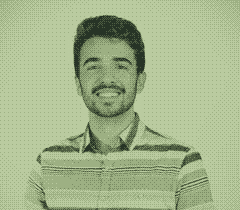

OSU SHARE Lab
Human–robot interaction researcher
I build robots that gesture, tell jokes, and try to read the room. At Oregon State, I study what people actually see in those behaviors and how their feedback can change the next thing a robot does.
Corvallis, Oregon

Research & projects
Motion design · First author
Teaching a robot to wave
Give the model the words “wave hello” and it still needs to decide which joints move, how far, and for how long. My system reads the robot’s joint limits and turns a prompt or reference video into timed poses. Webots plays them back so the designer can see what a second prompt needs to change.
I wanted to know whether that extra turn mattered to someone watching. In a study with 127 people and 21 simulated motions, viewers recognized the intended emotion in 48% of human-guided designs and 27% of hand-designed ones.
Submitted to HRI 2027.
Live performances · First author
When the joke falls flat
The most interesting part of a robot’s stand-up set comes just after the punchline. My NAO comedian could listen to the room, look at faces, or ask the audience directly. Each version had to turn that very different signal into the same decision about which follow-up to deliver.
We tried all three across 19 live performances with 80 people. None of the sensing strategies produced significantly better ratings. In interviews, people described how hard it was to tell whether the robot had changed its act in response to them.
Kevin A. Sabbe and Naomi T. Fitter · ACM THRI, 2026.
Assistive robotics
Where does a robot fit into therapy?
Before deciding what a therapy robot should do, I ask practitioners to walk me through the work they already do. A useful interview gets down to a particular moment in a session where a clinician could use an extra hand.
Those conversations shape what our prototype needs to do and what we should look for when we test it. We’ve run an initial evaluation with people. The next setting we’re preparing for is skilled nursing facilities.
Learning from human feedback
Is this a good time to ask?
Imagine giving a robot a reward for reaching a goal and watching it take a shortcut through a vase. The robot did what you rewarded. How can it learn which side effects matter when you only have time to answer a few questions?
Our approach lets the agent choose both where to ask and what kind of answer to request. A quick approval costs little. A correction takes more effort but can tell the robot what to do instead. The agent weighs how much it expects to learn against that cost.
Y. Anand, N. Nwagwu, K. Sabbe, N. T. Fitter and S. Saisubramanian · Frontiers in Robotics and AI, 2026.
Robot control · PyBullet
Give the arm a push
A simulated Kinova Gen3 is halfway through carrying a cube. Pick a point on its forearm and push sideways. The demo pauses the planned motion, and the applied force changes where the arm is trying to go. Keep holding and you can see it give way.
When you release the push, the arm finds the waypoint it left and finishes placing the cube. You can try the same push at the wrist, move individual joints, or take over the gripper with the keyboard.
Developer tools · Teaching
Where did this code come from?
In an introductory Python course, a student’s file can contain starter code, a snippet they pasted, and the part they wrote themselves. By the time someone reviews the assignment, the file alone tells very little of that story.
I built a VS Code extension that lets students record a source when they paste into a Python file or notebook. A separate comparison tool accounts for the starter template, so the reviewer can spend their time on the student’s changes. We use the extension in our undergraduate course.
Experience
Graduate Research AssistantSep 2026 – Present
Oregon State University. Translate practitioner interviews into design requirements and evaluation plans for robot-assisted physical therapy.
Graduate Teaching AssistantSep 2025 – Present
OSU College of Engineering. Develop labs and course materials for graduate Intro to Robotics and undergraduate Intro to Python Programming.
Human–Robot Interaction ResearcherMay 2024 – Present
OSU SHARE Lab. Design robot behaviors and run human-subjects studies on expressive motion and social feedback.
Senior Sports Program AssociateSep 2024 – Jun 2025
OSU Dixon Sports Programs. Managed intramural leagues and built tools to check player eligibility.
Club PresidentMay 2022 – Jun 2025
OSU Men’s Club Volleyball. Grew membership from 44 to 113 and annual fundraising from $1,500 to $20,000 while organizing clinics and tournaments.
Application Engineering InternJun – Sep 2022
Sanyo Denki America. Built mechanical prototypes and wrote embedded control software for multi-gantry demonstrations using cameras, sensors, and operator input.
Education & skills
Oregon State University
M.S., double major in Robotics and Artificial Intelligence
B.S., double major in Computer Science (Robotic Intelligence track) and Mechanical Engineering
Technical skills
Python, C++, TypeScript, OpenCV, PyTorch, multimodal perception
ROS and ROS 2, Webots, Gazebo, PyBullet, URDF, SolidWorks
Get in touch
I’d love to hear from people working on expressive motion, assistive robotics, or how robots respond to human feedback.
sabbek@oregonstate.eduMotion player
NAO / WebotsFrom prompt to gesture
Watch NAO wave, then compare two human-guided motions from my emotion research. Both use the same robot. Look at where its hands go and what happens to its head as the pose settles.
How the gestures are made